최근 수정 시각: 2018-05-22 16:27:35
분류: 나무위키
|  |
이용 안내 나무위키의 이용 방법에 대해서는 규정과 도움말을 확인해 보세요. 특히 주의하셔야 할 부분은 이 문서에 모아 두었습니다. |
게시판 공지사항 (문서 형태) · 그루터기 · 문의 · 신고 · 차단 소명 · 저작권 침해 삭제 요청 · 다중 계정 검사 요청 · 토론 문의 · 개발 문의 |
|
저작권 문의 본인 혹은 대리인으로서 문의하려면 아래 게시판을 이용해 주세요. |
|
 |
임시조치 문의 support@namu.wiki (투명성 보고서에 공개될 수 있으며, 임시조치가 아닌 문의에는 답변하지 않습니다.) |
| 나무위키 프로젝트 | |
 |
프로젝트에 참여해서 관련 문서에 기여의 손길을 보내주세요! 최근 신설된 프로젝트: 나무위키 규정 개선 프로젝트, 나무위키 누락문서 프로젝트, 나무위키 항공사 프로젝트 |
| 분류:토막글 · 이런 글이 필요하다 · 작성이 필요한 문서 · 내용이 짧은 문서 · 분류:나무위키 프로젝트 | |
 최근 변경
최근 변경 최근 토론
최근 토론 특수 기능
특수 기능
 게시판
게시판 작성이 필요한 문서
작성이 필요한 문서 고립된 문서
고립된 문서 분류가 되지 않은 문서
분류가 되지 않은 문서 편집된 지 오래된 문서
편집된 지 오래된 문서 내용이 짧은 문서
내용이 짧은 문서 내용이 긴 문서
내용이 긴 문서 차단 내역
차단 내역 RandomPage
RandomPage 파일 올리기
파일 올리기 라이센스
라이센스 라이브
라이브